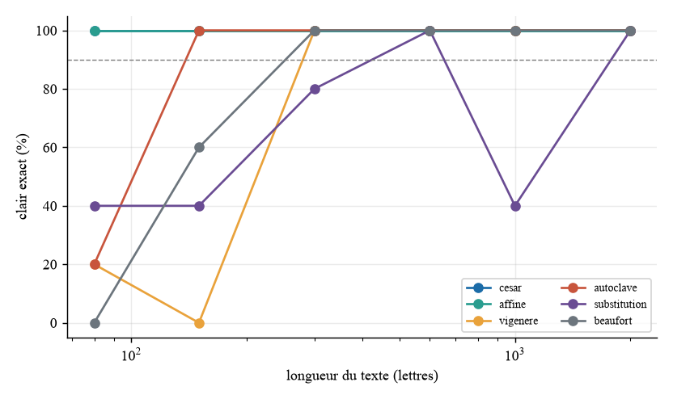
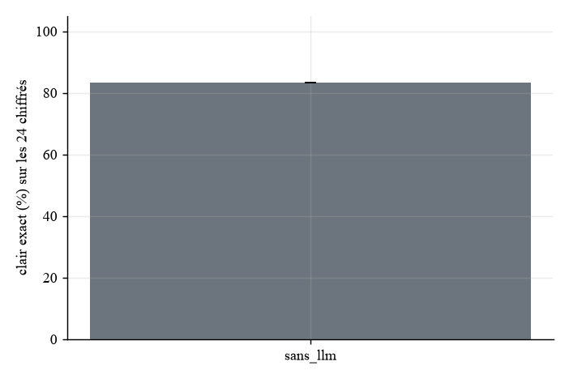
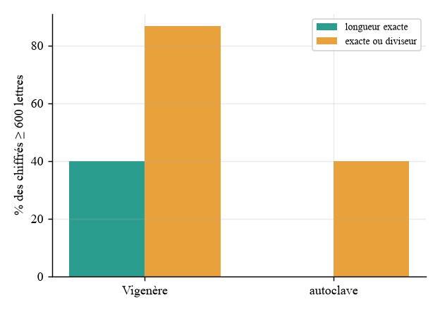
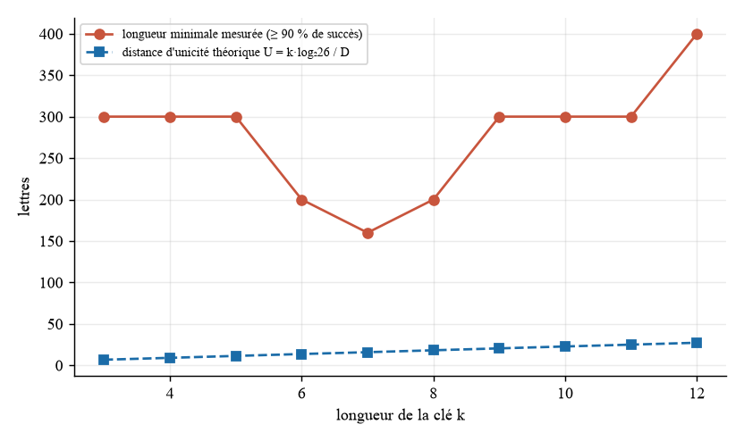

Vigenère-Squad
Cryptanalyse de chiffrements classiques par quatre agents encadrés. Cette page est générée par site/generer_site.py à partir de results/metrics.json ; chaque valeur y figure sous la clé indiquée.
83,3 %
clair exact, tous procédés (référence sans modèle)
sans_llm.taux_exact_global_pct
2,11
itérations moyennes
sans_llm.iterations_moyennes
3,77 s
temps moyen par chiffré
sans_llm.temps_moyen_s_par_chiffre
Résultats par procédé (sans modèle)
| Procédé | Clair exact | Longueur min. pour 90 % | Itérations | Lettres justes |
|---|---|---|---|---|
| César | 100,0 % | 80 | 1,00 | 100,0 % |
| Affine | 100,0 % | 80 | 2,00 | 100,0 % |
| Vigenère | 70,0 % | 300 | 1,30 | 86,7 % |
| Autoclave | 86,7 % | 150 | 3,10 | 89,7 % |
| Substitution | 66,7 % | 2000 | 3,00 | 98,5 % |
| Beaufort | 76,7 % | 300 | 2,23 | 86,1 % |

Robustesse (rejeu sur variantes)
La variante « sans espaces » donne les mêmes résultats que la base : le pipeline normalise le texte en lettres avant toute analyse.
| Variante | Chiffrés | Clair exact | Famille reconnue |
|---|---|---|---|
| fautes5 | 180 | 77,8 % | 98,9 % |
| sans_espaces | 180 | 83,3 % | 98,9 % |
Ablation : apport réel des agents
| Configuration | Chiffrés | Clair exact (moy. ± éc.-type) | Répétitions |
|---|---|---|---|
| Sans modèle | 24 | 83,3 ± 0,0 % | 1 |

Kasiski contre autoclave
| Procédé | Longueur exacte | Exacte ou diviseur | Score de la vraie longueur / score max |
|---|---|---|---|
| Vigenère | 40,0 % | 86,7 % | 0,97 |
| Autoclave | 0,0 % | 40,0 % | 0,37 |

Figure de Shannon
Entropie conditionnelle d'ordre 3 : 2,634 bit/lettre, redondance 2,066 bit/lettre.
| Longueur de clé | Longueur min. mesurée (90 %) | Distance d'unicité théorique |
|---|---|---|
| 10 | 300 | 22,8 |
| 11 | 300 | 25,0 |
| 12 | 400 | 27,3 |
| 3 | 300 | 6,8 |
| 4 | 300 | 9,1 |
| 5 | 300 | 11,4 |
| 6 | 200 | 13,7 |
| 7 | 160 | 15,9 |
| 8 | 200 | 18,2 |
| 9 | 300 | 20,5 |

Modèle de menace : contre-mesures évaluées
| Vecteur | Résultat |
|---|---|
| Données d'outil empoisonnées, sans contrôle de cohérence | 10 faux succès sur 10 |
| Données d'outil empoisonnées, avec contrôle de cohérence | 0 faux succès sur 10 |
| Appels d'outils hallucinés refusés | 20 refus, 10 chiffrés résolus sur 10 |
Exercices du Pédagogue
60 exercices générés : 100,0 % publiés, 100,0 % des corrigés vérifiés par les outils, 0,20 rejet en moyenne avant publication.